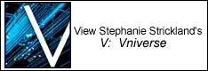

|
Stephanie Strickland's poem V is the first work of poetry to exist simultaneously in print and on the Web as one work. V: WaveSon.nets/Losing L'una (Penguin 2002) was selected by Brenda Hillman for the Alice Fay Di Castagnola Prize of the Poetry Society of America.
Strickland's print volumes include True North and The Red Virgin. Her hypermedia work includes The Ballad of Sand and Harry Soot. As the McEver Chair in Writing at the Georgia Institute of Technology, Strickland produced TechnoPoetry Festival 2002. Her website is stephaniestrickland.com.

Jaishree K. Odin teaches at the University of Hawaii at Manoa. Her book To the Other Shore: Lalla's Life and Poetry (Vitasta Pub 1999) is a feminist exploration of the life and thought of the fourteenth-century poet Lalla. She has also written on electronic literature. Her current book-length project, Through the Looking Glass: Technology, Nomadology, and Postmodern
Narrative, is a theoretical study of shattered visual metaphors in contemporary literature and art.
*Get the Adobe Acrobat reader here.
|